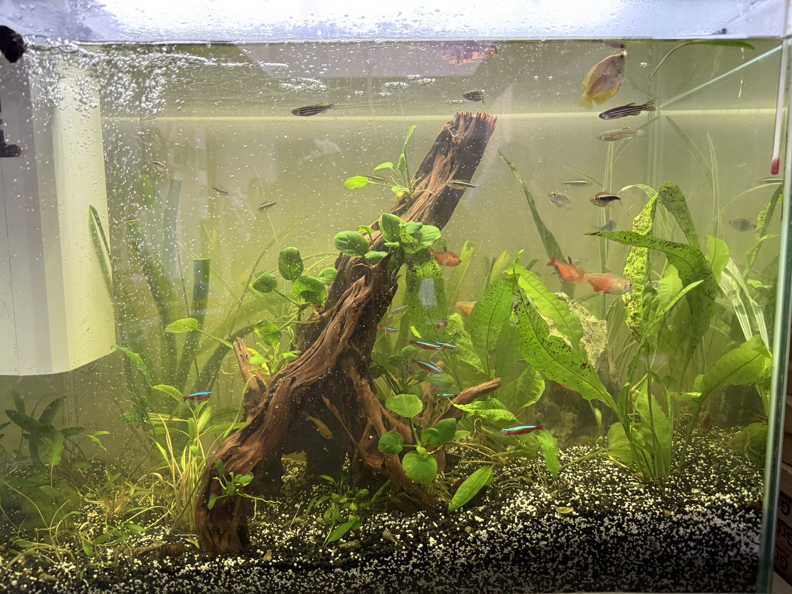

Hors des cours
Si vous me demandez de raconter un souvenir, je pense tout de suite à mon saut en parachute. Si vous me demandez ce que j’aime au quotidien, je vous parlerai aussi de nature et d’aquariophilie.
Mon aquarium, au fil du temps
J’aime passer du temps dehors, à vélo ou en randonnée. Chez moi, je peux aussi rester un bon moment devant un aquarium. Ce qui attire d’abord mon regard, ce sont les poissons de banc. Il suffit que le groupe change de direction pour que je me demande qui a réagi en premier et comment les autres ont suivi. J’ai parfois l’impression de voir une forme de solidarité entre eux. C’est ce que j’adore observer.
Les plantes me passionnent aussi. Sur ces deux photos d’un de mes aquariums, on retrouve la même racine en diagonale. Au début, on voyait surtout le gravier autour d’elle. Après le réaménagement, le vert couvre presque tout le sol et les plantes à l’arrière ajoutent des touches de rouge.


La chute libre
« Une vraie liberté et un shoot d’adrénaline. »
Quand je repense à mon saut en parachute, c’est la chute libre que je revois. J’ai toujours adoré les sports extrêmes, donc je savais que ça allait me plaire. Mais la sensation de sauter dans le vide… même aujourd’hui, j’en perds les mots.
Je suis fier d’avoir osé sauter. Et quand je revois la vidéo, je me dis aussi que j’ai eu de la chance. C’est une expérience qu’on a rarement l’occasion de vivre.
Retour à l’accueil